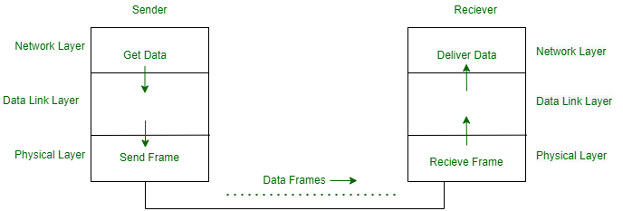
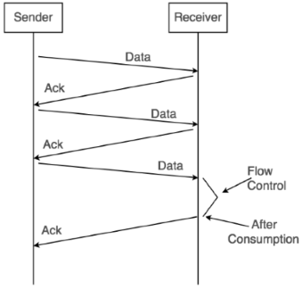
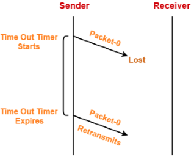
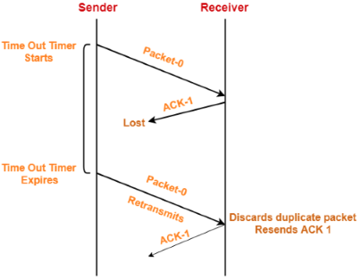
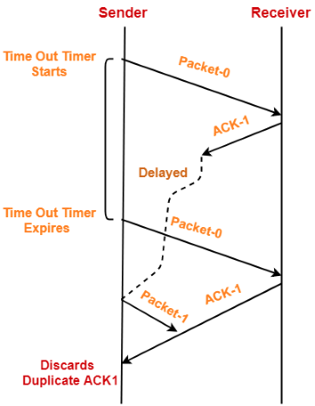
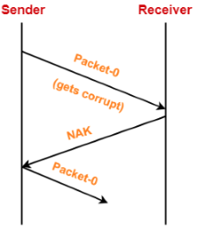
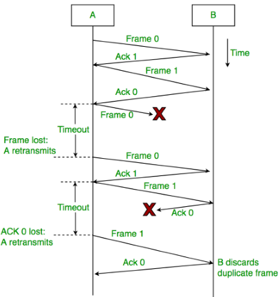
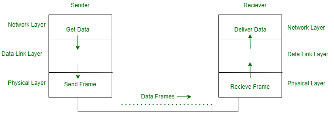
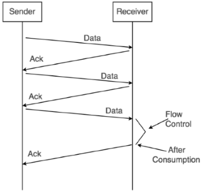
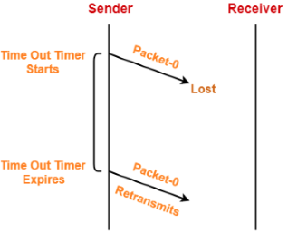

Introduction
Flow Control is a set of procedures for the Data Link Layer that controls the flow of data between the sender and the receiver. It allows two stations working at different speeds to communicate with each other. It is a set of measures taken to regulate the data that the Sender sends to receiver, so that no problem is faced if the Sender sends data at higher rate and receiver is too slow to support that data rate. To solve the above problem, FLOW CONTROL is introduced in Data Link Layer. It tells the sender how much data should be sent to the receiver so that the data is not lost. The main concept of Flow Control is to introduce EFFICIENCY in Computer Networks. To help in it, there are various flow control protocols which are classified as:-

Fig. 1 Flow Control Protocols
All the protocols we will discuss are unidirectional in the sense that the data frames travel from one node, called the sender, to another node, called the receiver. Although special frames, called acknowledgment (ACK) and negative acknowledgment (NAK) can flow in the opposite direction for flow and error control purposes, data flow in only one direction. In a real-life network, the data link protocols are implemented as bidirectional; data flow in both directions. In these protocols the flow and error control information such as ACKs and NAKs is included in the data frames in a technique called piggybacking. Because bidirectional protocols are more complex than unidirectional ones, we chose the latter for our discussion.
Since the simplest protocol is unidirectional, there is no acknowledgment (ACK). Also, as there is no data loss in the transmission, there is no need for data re-transmission.
Fig. 2 The data transfer and design of the simplest protocol.
Sender:
Rule 1) Send one data packet at a time.
Rule 2) Send the next packet only after receiving acknowledgement for the previous.
Receiver:
Rule 1) Receive and consume data packet.
Rule 2) After consuming packet, acknowledgement need to be sent (Flow Control)
Fig. 3 Working of Stop and Wait
This protocol involves the following transitions :Stop and Wait ARQ = Stop and Wait + Timeout timer + Sequence number
2. In Stop-and-Wait ARQ the acknowledgment number always announces in modulo-2 arithmetic the sequence number of the next frame expected.
How Stop and Wait ARQ Solves All Problems?
The problems of stop-and-wait are resolved by Stop and Wait ARQ that does both error control and flow control.
1. Problem of Lost Data Packet-
Fig. 4 Solution for Lost Data Packet
2. Problem of Lost Acknowledgement-

Fig. 5 Solution for Lost Acknowledgement
3. Problem of Delayed Acknowledgement-

Fig. 6 Solution for Delayed Acknowledgement
4. Problem of Damaged Packet-

Fig. 7 Solution for Damaged Packet

Fig. 8 Working of Stop-and-Wait ARQ
All the protocols we will discuss are unidirectional in the sense that the data frames travel from one node, called the sender, to another node, called the receiver. Although special frames, called acknowledgment (ACK) and negative acknowledgment (NAK) can flow in the opposite direction for flow and error control purposes, data flow in only one direction. In a real-life network, the data link protocols are implemented as bidirectional; data flow in both directions. In these protocols the flow and error control information such as ACKs and NAKs is included in the data frames in a technique called piggybacking. Because bidirectional protocols are more complex than unidirectional ones, we chose the latter for our discussion.
Simplest Protocol
The simplest protocol is the Elementary Data Link Protocol. As the simplest protocol is used in noiseless channels, it has no error control and no flow control. In the simplest protocol, we assume that the receiver is always ready to handle any frames coming from the sender immediately. The simplest protocol is a unidirectional protocol in which the data frames are traveling in only one direction from the sender to the receiver.Since the simplest protocol is unidirectional, there is no acknowledgment (ACK). Also, as there is no data loss in the transmission, there is no need for data re-transmission.
Design
The data link layer at the sender site gets data from its network layer, makes a frame out of the data, and sends it. The data link layer(receiver site) receives a frame from its physical layer, extracts data from the frame, and convey the data to its network layer. The data link layers of the sender and receiver provide communication/transmission services for their network layers. The data link layers utilization the services provided by their physical layers for the physical transmission of bits.
Stop and Wait
It provides unidirectional data transmission with flow control facilities but without error control facilities. The transmit and receive window sizes equal to one in both cases. Irrespective of the number of packets sender is having stop and wait for protocol requires only 2 sequence numbers 0 and 1.Sender:
Rule 1) Send one data packet at a time.
Rule 2) Send the next packet only after receiving acknowledgement for the previous.
Receiver:
Rule 1) Receive and consume data packet.
Rule 2) After consuming packet, acknowledgement need to be sent (Flow Control)

Advantages:
- It is very simple to implement.
- The incoming packet from receiver is always an acknowledgement.
Limitations:
- It is extremely inefficient because-
- It makes the transmission process extremely slow.
- It does not use the bandwidth entirely as each single packet and acknowledgement uses the entire time to traverse the link.
- If the data packet sent by the sender gets lost, then-
- Sender will keep waiting for the acknowledgement for infinite time.
- Receiver will keep waiting for the data packet for infinite time.
- If acknowledgement sent by the receiver gets lost, then-
- Sender will keep waiting for the acknowledgement for infinite time.
- Receiver will keep waiting for another data packet for infinite time.
Stop and Wait ARQ
This protocol adds a simple error control mechanism to the Stop-and-Wait Protocol. Error control in the data link layer is often implemented simply: Any time an error is detected in an exchange, specified frames are retransmitted. This process is called automatic repeat request (ARQ).This protocol involves the following transitions :
- The sender sends one frame at a time and waits for the acknowledgment.
- Once the receiver receives a valid frame, it sends an acknowledgment frame back to the sender.
- On receiving the acknowledgment frame, the sender understands that the receiver is ready to accept the next frame. So it sends the next frame in queue.
- If the ACK does not reach the sender before a certain time, known as the timeout, the sender sends the same frame again. The timeout countdown is reset after each frame transmission.
NOTE:
1. In Stop-and-Wait ARQ we use sequence numbers to number the frames. The sequence numbers are based on modulo-2 arithmetic.2. In Stop-and-Wait ARQ the acknowledgment number always announces in modulo-2 arithmetic the sequence number of the next frame expected.
How Stop and Wait ARQ Solves All Problems?
The problems of stop-and-wait are resolved by Stop and Wait ARQ that does both error control and flow control.
1. Problem of Lost Data Packet-
- Time out timer helps to solve the problem of lost data packet.

2. Problem of Lost Acknowledgement-
- Consider the acknowledgement sent by the receiver gets lost.
- Then, sender retransmits the same data packet after its timer goes off.
- The sequence number on the data packet helps the receiver to identify the duplicate data packet.
- Receiver discards the duplicate packet and re-sends the same acknowledgement.
3. Problem of Delayed Acknowledgement-
- Sequence number on acknowledgements help to solve the problem of delayed acknowledgement.
4. Problem of Damaged Packet-
- If receiver receives a corrupted data packet from the sender, it sends a negative acknowledgement (NAK) to the sender.
- NAK requests the sender to send the data packet again.
Working of Stop and Wait for ARQ:
- Sender A sends a data frame or packet with sequence number 0.
- Receiver B, after receiving the data frame, sends an acknowledgement with sequence number 1 (the sequence number of the next expected data frame or packet)
There is only a one-bit sequence number that implies that both sender and receiver have a buffer for one frame or packet only.
Few Terminologies :
-
Transmission Delay (Tt) : Time to transmit the packet from host to the outgoing link.
- D : Data Size to transmit,
- B : Bandwidth of the link.
-
Propagation Delay (Tp) : It is the time taken by the first bit transferred by the host onto the outgoing link to reach the destination.
- d : distance,
- s : the wave propagation speed (depends on the characteristics of the medium).
-
Efficiency of stop-and-wait ARQ (η)
- Useful time = Transmission delay of data packet = (Transmission delay)packet
- Useless time = Time for which sender is forced to wait and do nothing = 2 x Propagation delay
- Total time = Useful time + Useless time
where,
Advantages:
- It is very simple to implement.
- The incoming packet from receiver is always an acknowledgement.
Disadvantage:
- Inefficient